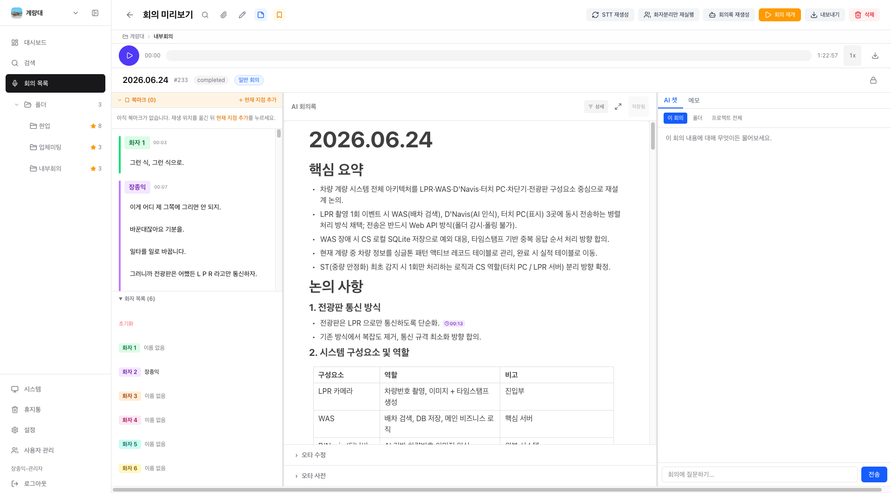
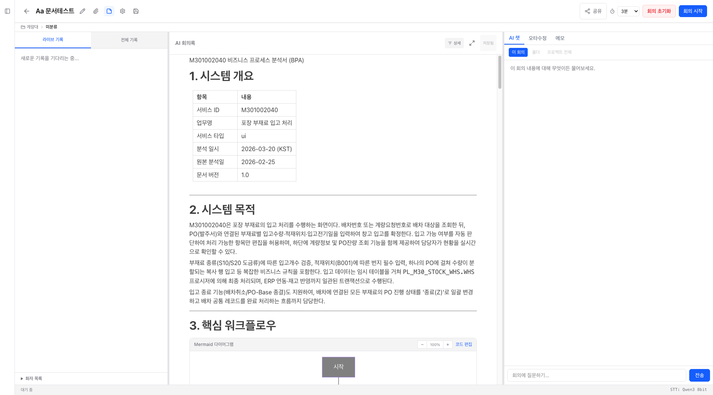
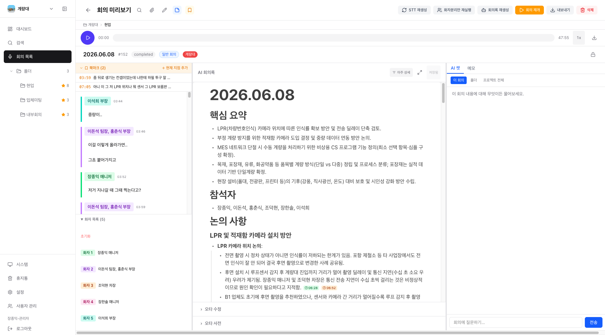
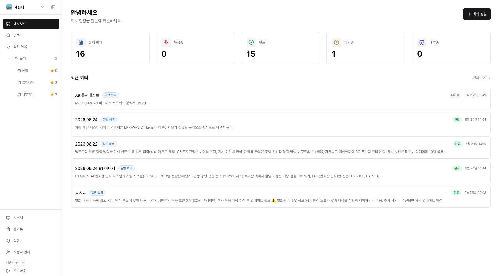
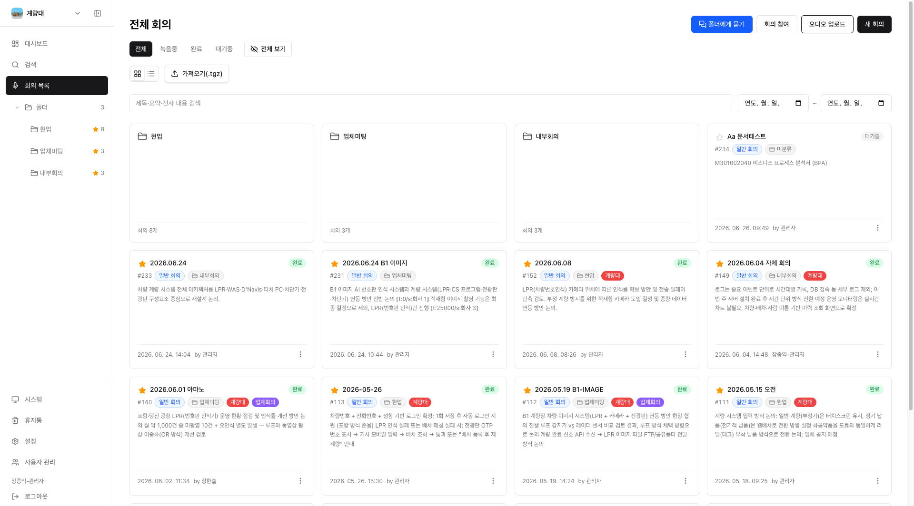
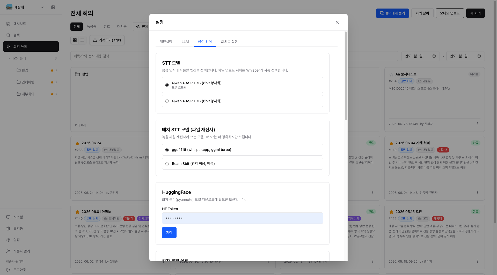

회의에 집중하세요.
기록은 또박또박이 합니다.
회의 음성을 실시간으로 받아쓰고, AI가 핵심 요약·결정사항·할 일까지 정리합니다. 음성도 회의록도 우리 서버 안에만 머뭅니다.

전 코퍼스 로컬
음성·전사·요약 전체가 팀 서버나 내 기기 안에만 머뭅니다. 외부 클라우드로 한 글자도 나가지 않습니다.
근거를 클릭하면 그 순간으로
요약·답변 문장마다 발화 시각과 화자가 붙습니다. 누르면 원본 오디오의 바로 그 지점으로 점프합니다.
여러 회의를 가로질러 질문
한 회의를 넘어 폴더·프로젝트 전체에 묻습니다. 의미 검색으로 답을 찾고 해당 회의로 이동합니다.
팀 단위로 쌓는 회의록
개인 도구와 달리 프로젝트·폴더로 회의록을 함께 모으고, 공유 코드로 실시간으로 같이 봅니다.
녹음 버튼 하나로, 회의록까지.
한 번의 녹음이 자막에서 구조화된 회의록으로, 그리고 검색 가능한 팀 자산으로 이어집니다.
말하면 자막이 됩니다
마이크와 시스템 오디오를 함께 받아 실시간으로 받아씁니다. 9개 언어를 인식하고 화자를 자동으로 구분합니다.
AI가 정리합니다
약 1분 주기로 핵심 요약·논의·결정·할 일을 구조화합니다. 스탠드업·인터뷰 등 회의 유형별 양식을 따릅니다.
검색하고 공유합니다
전사·요약을 전역에서 찾고, 회의에 직접 질문하고, 공유 코드와 내보내기로 팀과 나눕니다.
받아쓰기가 아니라, 읽기 좋은 회의록.
실제 화면 그대로입니다. 녹음하는 동안 회의록이 만들어지고, 끝나면 바로 찾고 나눌 수 있습니다.
말하는 동안 회의록이 완성됩니다
왼쪽에 실시간 자막과 화자, 가운데에 AI 회의록, 오른쪽에 메모. 회의를 멈추지 않고도 기록이 채워집니다.
- 실시간 자막과 화자 구분을 한 화면에서
- 약 1분 주기로 핵심 요약·논의·결정 자동 갱신
- 메모와 AI 피드백으로 즉석에서 다듬기

모든 문장에 ‘언제, 누가’ 가 붙습니다
AI가 지어낸 말인지 헷갈릴 일이 없습니다. 요약 옆 인용을 누르면 화자가 그 말을 한 순간으로 정확히 이동합니다.
- 요약·답변 문장마다 발화 시각·화자 인용
- 인용 클릭 시 원본 오디오의 해당 지점으로 점프
- 잘못 들은 고유명사는 폴더별 오타사전으로 일괄 교정

오늘의 회의를 한 화면에
전체·녹음 중·완료·대기 건수를 한눈에. 카드를 누르면 바로 그 상태의 목록으로 들어갑니다.
- 상태별 건수와 최근 회의를 요약해서 표시
- 예약·놓친 회의를 배너로 알림
- 카드 클릭으로 곧장 필터된 목록 이동

프로젝트와 폴더로 회의를 자산화
흩어진 녹음이 아니라 검색 가능한 팀 기록으로. 카드와 리스트, 태그와 폴더로 차곡차곡 정리됩니다.
- 카드/리스트 뷰, 태그·날짜·상태로 필터와 검색
- 폴더·프로젝트 단위 공유와 비공개 전환
- 회의·폴더·프로젝트를 통째로 내보내고 가져오기

회의 전·중·후를 모두 덮습니다.
녹음과 받아쓰기부터 정리·검색·공유·관리까지. 필요한 만큼만 켜서 씁니다.
녹음 · STT
- 실시간 음성 인식, VAD 무음 스킵
- 오디오 파일 업로드 전사
- 9개 언어 · 시스템 오디오 캡처
- 환경별 STT 엔진 자동 선택
AI 회의록 · 요약
- 핵심·논의·결정·할 일 구조화
- 회의 유형별 양식, 압축율 5단계
- 자연어 피드백으로 수정
- Mermaid 다이어그램 자동 생성
화자 분리
- 발화자 자동 구분, 회의별 화자 인식
- 화자 이름 인라인 편집
- 배지 클릭으로 발화 따라가기
- 화자분리만 다시 실행
AI 챗
- 회의에 질문, 실시간 스트리밍 답변
- 회의/폴더/프로젝트 범위 전환
- 여러 회의 교차 Q&A
- 답변마다 회의로 인용 점프
검색
- 전사·요약 전역 검색과 하이라이트
- 화자·날짜·상태 필터
- 회의 안에서 본문 검색
- 의미 검색(임베딩) 기반 발췌
공유 · 권한
- 6자리 코드로 실시간 공유(최대 20명)
- 읽기전용 뷰어 모드
- 호스트 위임·자동 승계
- 회의 잠금, 폴더 가시성 상속
내보내기 · 가져오기
- MD·PDF·DOCX·외부 LLM 프롬프트
- 회의·폴더 아카이브(.tgz) 이관
- 프로젝트 통째로 백업·복원
- 인용 제거·할 일 체크박스화
예약 · 자동화
- 예약 회의 자동/수동 시작
- 주간·일간 반복 자동 생성
- 다가오는·놓친 예약 알림
- 데스크톱 백그라운드·트레이
설정 · 모델
- 요약·챗 LLM을 직접 선택·테스트
- 로컬 LLM(Ollama 등)으로 오프라인
- 회의 언어·STT·화자분리 조정
- 회의 템플릿·요약 양식 관리
데스크톱 · 모바일
- macOS·Windows·Linux 데스크톱 앱
- 모바일 잠금화면 백그라운드 녹음
- 완전 오프라인 온디바이스 전사
- 로컬/서버 모드 선택
할 일 · 결정
- 할 일을 담당·기한과 함께 추출·관리
- 결정사항 로그(맥락·상태)
- 타임스탬프 북마크
- 명함 OCR로 참석자 자동 등록
폴더 · 프로젝트
- 프로젝트별 작업 공간과 멤버 초대
- 폴더 트리로 회의 분류·이동
- 경로 브레드크럼 네비게이션
- 휴지통 소프트삭제·복구
클라우드 회의록이 못 주는 네 가지.
받아쓰기 정확도는 어디나 비슷해집니다. 차이는 데이터가 어디에 있고, 회의록을 얼마나 믿을 수 있고, 팀이 함께 쓸 수 있느냐에서 납니다.
데이터 주권
음성·전사·요약이 우리 인프라 밖으로 나가지 않습니다. 민감한 사내 회의를 그대로 맡길 수 있습니다.
근거 기반
모든 요약과 답변이 발화 시각·화자로 검증됩니다. AI 환각을 한 번의 클릭으로 확인합니다.
교차 회의
한 회의가 아니라 폴더·프로젝트 전체에 질문합니다. 쌓일수록 더 똑똑해지는 팀 지식이 됩니다.
모델 자유
요약·챗 모델을 직접 고릅니다. Anthropic·OpenAI·로컬 Ollama까지, 인터넷 없이도 동작합니다.
